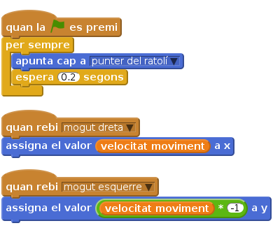

Llista de tasques
Podeu fer que els ulls del vostre monstre segueixin el ratolí per tota la pantalla. Penseu que el vostre monstre pot tenir tants ulls com vulgueu! Per fer que els ulls del monstre segueixin sempre el punter del ratolí necessitem el bloc
per sempre.
Una vegada hàgim activat la bandera verda voldrem que els ulls apuntinper semprea la direcció del punter del ratolí i que es re-ajustin a cada fracció de segon.
Fixeu-vos que hem utilitzat envia a tots per moure els ulls juntament amb el cos i altres parts. Què més podem fer que facin els seus ulls? Si movem el cursor del ratolí entre els ulls del monstre els creuarà!